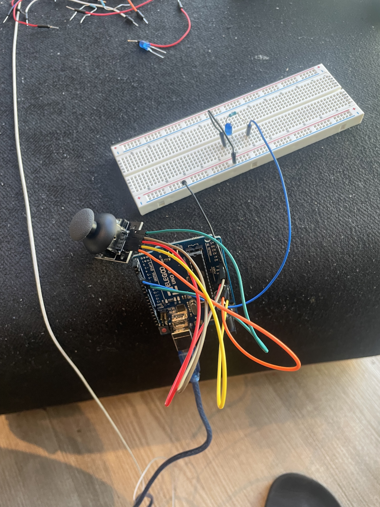

Here is the schematic of my breadboard circuit connected to the ardruino. The joystick is connected to ground, a 5V poer supply, A0 for x coordinate and A1 for y coordinate. It connects the SW pin to pin 3. The blue LED's positive terminal is connected to a 100 ohm resistor and in turn the resistor is connected to pin 2. The negative end is connected to ground.
Here I connected a joystick with ground, 5v power supply, A0 and A1 as x and y coordinates respectively and the SW pin to pin 3. The LED is connected to pin 2. It uses a 100 ohm resistor dur to the voltage drop being 3.3V. As per Ohm's law, V= IR. Vnew = 5-3.3 = 1.7V. Using 0.2mA, we get R = 85 Ohms.
int xPin = A0;// x-coordinate of joystick movement at A0
int yPin = A1; // y-coordinate of joystick movement at A0
int switchPin = 3; // Connect the SW pin of the joystick to digital pin 3
int pwmPin = 2; // led connected to pwn pin 2
void setup() {
pinMode(xPin, INPUT);
pinMode(yPin, INPUT);
pinMode(switchPin, INPUT);
pinMode(pwmPin, OUTPUT);
digitalWrite(pwmPin, HIGH);
Serial.begin(9600);
}
void loop() {
int x_data = analogRead(xPin);
int y_data = analogRead(yPin);
int brightness1 = map(x_data, 0, 1023, 0, 255);
int brightness2 = map(y_data, 0, 1023, 0, 255);
int switchState = digitalRead(switchPin);
analogWrite(pwmPin, brightness1); // Set PWM value for the LED based on x coordinate
analogWrite(pwmPin, brightness2); // // Set PWM value for the LED based on y coordinate
Serial.print(x_data);
Serial.print(",");
Serial.print(y_data);
Serial.print(",");
Serial.print(switchPin);
Serial.print(",");
Serial.print(brightness1);
Serial.print(",");
Serial.println(brightness2);
delay(100);
}
const BAUD_RATE = 9600; // This should match the baud rate in your Arduino sketch
let port, connectBtn; // Declare global variables
function setup() {
setupSerial(); // Run our serial setup function (below)
// Create a canvas that is the size of our browser window.
createCanvas(windowWidth, windowHeight);
// p5 text settings.
textFont("system-ui", 50);
textStyle(BOLD);
textAlign(CENTER, CENTER);
}
function draw() {
const portIsOpen = checkPort(); // Check whether the port is open
if (!portIsOpen) return; // If the port is not open, exit the draw loop
let str = port.readStringUntil("\n"); // Read from the port until the newline
if (!str) return; // If we didn't read anything, return.
// Split the string into an array using commas as the delimiter
let data = split(str, ',');
// Parse values from the array
let x_data = Number(data[0]);
let y_data = Number(data[1]);
let switchState = Number(data[2]);
// Change text and colors based on LED state
if (switchState == LOW) {
background("darkcyan");
fill("coral");
text("not pressed", windowWidth / 2, windowHeight / 2);
} else {
background("lightskyblue");
fill("yellow");
text("pressed!", windowWidth / 2, windowHeight / 2);
}
// LED control based on joystick input
analogWrite(pwmPin, brightness);
}
// helper functions for managing the serial connection.
function setupSerial()
port = createSerial();
// Check to see if there are any ports we have used previously
let usedPorts = usedSerialPorts();
if (usedPorts.length > 0) {
// If there are ports we've used, open the first one
port.open(usedPorts[0], BAUD_RATE);
}
function checkPort() {
if (!port.opened()) {
// If the port is not open, change button text
connectBtn.html("Connect to Arduino");
// Set background to gray
background("gray");
return false;
} else {
// Otherwise we are connected
connectBtn.html("Disconnect");
return true;
}
}
function onConnectButtonClicked() {
// When the connect button is clicked
if (!port.opened()) {
// If the port is not opened, we open it
port.open(BAUD_RATE);
} else {
// Otherwise, we close it!
port.close();
}
}
Here is an animated gif showing the operation of my circuit.